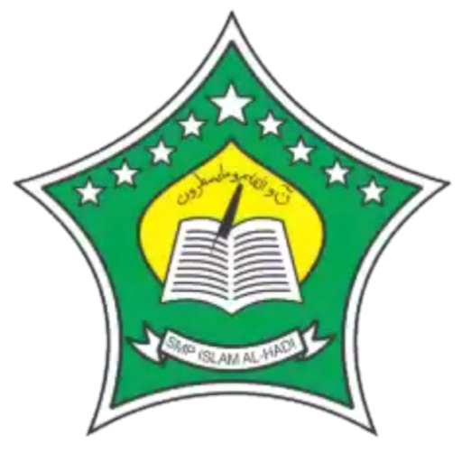

Riwayat Pendidikan

Sekolah Dasar
Saya bersekolah dasar diSDN Sapen 02 pada tahun 2014 - 2021 di Kecamatan Mojolaban Kabupaten Sukoharjo

Sekolah Menengah Pertama
Saya bersekolah Menengah Pertama diSMP Islam AL-Hadi pada tahun 2021-2024 di Kecamatan Mojolaban, Kabupaten Sukoharjo
Sekolah Menengah Kejuruan
Saya bersekolah Menengah Kejuruan diSMKN 02 Karanganyar pada tahun 2024 di Kecamatan Karanganyar Kabupaten Karanganyar